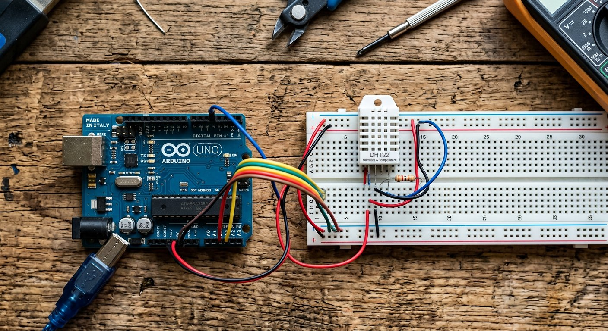

Qué cubre esta guía
- Qué es el DHT22 y diferencias con el DHT11
- Especificaciones técnicas
- Conexión con resistencia pull-up
- Instalar la librería DHT
- Código de lectura de temperatura y humedad
- Frecuencia de muestreo: no leer más rápido de 2 segundos
- Mini estación meteorológica con registro
- Problemas comunes y soluciones
- Preguntas frecuentes
Qué es el DHT22 y diferencias con el DHT11
El DHT22 (también vendido como AM2302) es un sensor digital que mide temperatura y humedad en un solo módulo, comunicándose por un único pin de datos mediante un protocolo propio. Es el sensor elegido cuando se necesita más precisión que la que ofrece su hermano menor, el DHT11.
- DHT11: más barato, rango de 0–50 °C y 20–80% de humedad, resolución de 1 °C y ±5% de humedad. Suficiente para proyectos de aficionado.
- DHT22: rango de -40 a 80 °C y 0–100% de humedad, resolución de 0.1 °C y precisión de ±0.5 °C. El estándar para estaciones meteorológicas escolares y registro serio de datos.
Especificaciones técnicas
| Parámetro | Valor |
|---|---|
| Voltaje de alimentación | 3.3 – 5 V |
| Rango de temperatura | -40 a 80 °C |
| Precisión de temperatura | ±0.5 °C |
| Rango de humedad | 0 – 100% |
| Precisión de humedad | ±2 – 5% |
| Frecuencia de muestreo | 0.5 Hz (1 lectura cada 2 s) |
Conexión con resistencia pull-up
El sensor tiene cuatro pines: VCC, DAT (datos), NC (no conectado) y GND. La conexión es directa, con un único componente adicional:
DHT22 Arduino Uno
-------- -----------
VCC --> 5V
DAT --> Pin digital 2
GND --> GND
NC --> (no se conecta)
Además: una resistencia de 10 kΩ entre DAT y VCC (pull-up)Instalar la librería DHT
Leer el DHT22 a mano (manipulando los tiempos del protocolo) es posible pero engorroso; la forma práctica es usar una librería madura. En el IDE de Arduino:
- Abre el Gestor de Librerías (menú Herramientas → Administrar Bibliotecas).
- Busca "DHT sensor library" de Adafruit.
- Instálala (el gestor instalará también la dependencia de sensores unificados de Adafruit si la pide).
- Reinicia el IDE y usa los ejemplos incluidos como punto de partida.
Código de lectura de temperatura y humedad
#include <DHT.h>
#define PIN_DHT 2 // pin de datos del sensor
#define TIPO_DHT DHT22 // DHT11, DHT22 o DHT21 segun tu sensor
DHT sensor(PIN_DHT, TIPO_DHT);
void setup() {
Serial.begin(9600);
sensor.begin();
}
void loop() {
// Leer humedad y temperatura (flotantes)
float humedad = sensor.readHumidity();
float temperatura = sensor.readTemperature(); // en grados Celsius
// Verifica si la lectura fue valida
if (isnan(humedad) || isnan(temperatura)) {
Serial.println("Error de lectura del sensor DHT22");
delay(2000);
return;
}
Serial.print("Humedad: ");
Serial.print(humedad);
Serial.print(" % | Temperatura: ");
Serial.print(temperatura);
Serial.println(" C");
delay(2000); // respeta la frecuencia de muestreo del sensor
}La comprobación con isnan() es esencial: cuando la lectura falla, la librería devuelve NaN y el programa debe manejarlo en lugar de mostrar un valor sin sentido.
Frecuencia de muestreo: no leer más rápido de 2 segundos
El DHT22 solo puede entregar una lectura cada 2 segundos. Leerlo más rápido produce valores repetidos, erróneos o NaN. Por eso el delay(2000) del ejemplo no es opcional: es una restricción física del sensor. En proyectos más grandes donde no quieres bloquear el programa con delay(), usa millis() para espaciar las lecturas y dejar el resto del loop libre para otras tareas.
Mini estación meteorológica con registro
Con el DHT22 más una pantalla OLED o simplemente el monitor serie, ya tienes una mini estación meteorológica. Para convertirla en un proyecto científico, agrega registro de datos en el tiempo: guarda lecturas cada N minutos y compáralas a lo largo del día.
#include <DHT.h>
#define PIN_DHT 2
#define TIPO_DHT DHT22
DHT sensor(PIN_DHT, TIPO_DHT);
// Intervalo de registro: 60 segundos
const unsigned long INTERVALO = 60000UL;
unsigned long ultimoRegistro = 0;
void setup() {
Serial.begin(9600);
sensor.begin();
}
void loop() {
unsigned long ahora = millis();
if (ahora - ultimoRegistro >= INTERVALO) {
ultimoRegistro = ahora;
float h = sensor.readHumidity();
float t = sensor.readTemperature();
if (!isnan(h) && !isnan(t)) {
// Formato simple para copiar a una planilla
Serial.print("minuto,");
Serial.print(ahora / 60000);
Serial.print(",");
Serial.print(t);
Serial.print(",");
Serial.println(h);
}
}
}El formato separado por comas se copia directamente a una hoja de cálculo para graficar la evolución de temperatura y humedad durante el día. La versión completa con pantalla OLED y montaje está en la guía de la estación meteorológica con Arduino y pantalla OLED.
Problemas comunes y soluciones
| Síntoma | Causa probable | Solución |
|---|---|---|
| La librería devuelve NaN | Falta el pull-up o lectura demasiado rápida | Agregar resistencia de 10 kΩ y espaciar lecturas 2 s |
| Valores que no cambian | Lectura más rápida que la frecuencia del sensor | Respetar el intervalo mínimo de 2 segundos |
| Lecturas muy altas de humedad | Condensación sobre el sensor | Dejar secar y montar en lugar ventilado |
| El sensor se calienta y mide mal | Alimentación con más de 5V o autocalentamiento | Verificar voltaje y espaciar lecturas |
| Conexión intermitente | Falso contacto del sensor desnudo | Soldar los pines o usar un módulo con pines integrados |
Conclusión
El DHT22 es el sensor ideal para quien quiere medir clima con más rigor que un termómetro de juguete: dos magnitudes, un solo pin, una librería madura y un camino directo hacia una estación meteorológica completa. Recuerda el pull-up, respeta la frecuencia de muestreo y verifica siempre con isnan(), y tendrás lecturas confiables para registro de datos. El siguiente paso es integrar el sensor en la estación meteorológica con pantalla OLED o explorar los sensores infrarrojos para robots siguelíneas.
Preguntas frecuentes
¿Cuál es la diferencia entre el DHT11 y el DHT22?
El DHT22 (también llamado AM2302) es más preciso y tiene un rango más amplio que el DHT11: mide temperatura entre -40 y 80 °C con precisión de ±0.5 °C, y humedad entre 0 y 100% con precisión de ±2-5%, mientras que el DHT11 se limita a 0-50 °C con ±2 °C y humedad de 20-80% con ±5%. El DHT22 también tiene una resolución de 0.1 °C frente a 1 °C del DHT11, y una frecuencia de muestreo menor (0.5 Hz, es decir, una lectura cada 2 segundos). Para proyectos de aficionado el DHT11 alcanza; para estaciones meteorológicas con más rigor conviene el DHT22.
¿Por qué el DHT22 necesita una resistencia pull-up de 10 kΩ?
El DHT22 se comunica por un solo cable de datos usando un protocolo propio, y ese pin necesita quedar en un estado definido (alto) cuando no hay transmisión. La resistencia pull-up de 10 kΩ conecta el pin de datos a VCC para mantenerlo en nivel alto, evitando que quede flotante y produzca lecturas erráticas o nulas. Algunos módulos DHT22 ya traen esta resistencia soldada en la placa; si compras el sensor desnudo de 4 pines, debes agregarla tú entre el pin de datos y VCC.
¿Cada cuánto tiempo puedo leer el DHT22?
El DHT22 tiene una frecuencia de muestreo máxima de aproximadamente 0.5 Hz, es decir, una lectura cada 2 segundos. Leerlo más rápido produce valores repetidos, erróneos o nulos, porque el sensor necesita tiempo para completar cada ciclo de medición. Por eso los programas bien hechos colocan un delay de al menos 2000 milisegundos entre lecturas, o mejor aún, usan millis() para espaciar las lecturas sin bloquear el resto del programa.
¿Qué significan los valores NaN que a veces devuelve la librería DHT?
El valor NaN (Not a Number) indica que la lectura falló: la librería no pudo completar la comunicación con el sensor en ese intento. Las causas más comunes son leer el sensor más rápido de lo que permite (menos de 2 segundos entre lecturas), una resistencia pull-up ausente o mal conectada, cables sueltos o demasiado largos, o alimentación inestable. La solución estándar es verificar el cableado, agregar el pull-up y comprobar el valor devuelto por la función de lectura, reintentando o ignorando las lecturas fallidas.
¿Puedo usar el DHT22 al aire libre?
Sí, pero con precauciones. El sensor soporta el rango de temperatura exterior, pero la humedad directa, la lluvia y la luz solar intensa lo degradan y distorsionan las lecturas. Para uso exterior conviene montarlo dentro de un resguardo o caseta meteorológica que lo proteja del sol y de la lluvia pero deje circular el aire, y evitar que se condense agua sobre el sensor, que altera la medición de humedad. Para un registro serio, combínalo con el montaje de la guía de la estación meteorológica de este sitio.
Este artículo es contenido editorial independiente: no contiene ubicaciones patrocinadas ni enlaces de afiliado. Si en futuras actualizaciones se agregan enlaces a proveedores de componentes, serán identificados explícitamente. El código y las conexiones son referenciales y deben adaptarse y probarse con tu propio hardware. Si detectas un error en esta guía, por favor avísanos.
Sigue aprendiendo
Convierte este sensor en un proyecto completo con la Estación Meteorológica con Arduino y Pantalla OLED, o sigue con los Sensores Infrarrojos para Robots Siguelíneas.
Fuentes primarias y lecturas recomendadas
Referencias que sustentan los conceptos generales de la guía. Los valores exactos pueden variar según el fabricante.
- Arduino Libraries — DHT Sensor Library (Adafruit)
- Adafruit Learning System — DHT11, DHT22 y AM2302
- Arduino Reference — isnan()
Enlaces revisados: 13 de agosto de 2026.